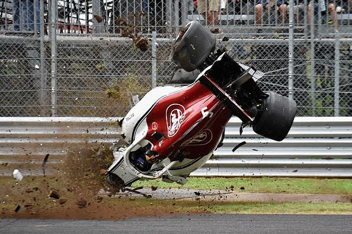
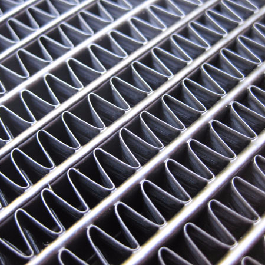
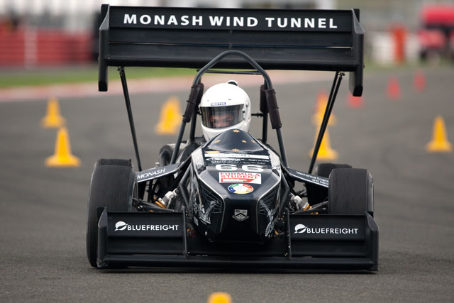
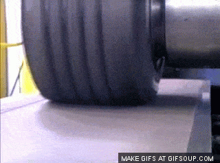
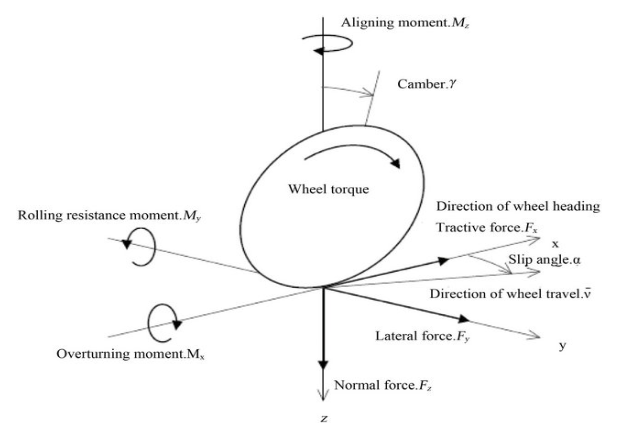
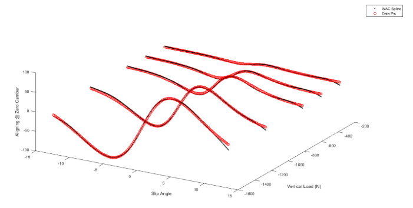
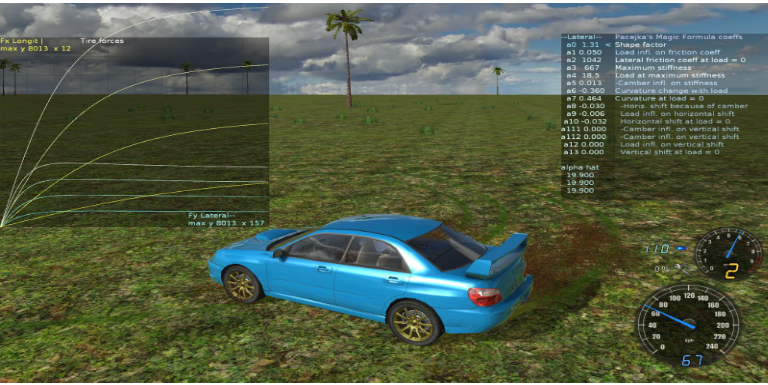

BLOG

Read More
The Thrills & Spills of F1
Everyone is aware of the fact that with speed comes the added
danger of accidents. All of us have heard of multiple
accidents in our daily lives and many of them turn out to be
fatal for the involved drivers...

The Gearing Lingo
Exited the corner, encountered a clear road and tossed into
the higher gear because you wanted to speed up. But do you
have an idea what actually happens when you shift up or down
through the gears? ...

A Tale of Differentials
So it was a pleasant weather outside with a cool breeze
blowing and you decided to go out for a long drive in your
car. It was not minutes after you started driving, came out of
a corner and one of the back tyres of your car...

We all know that an internal combustion engine burns fuel to produce power which spins the wheels in an automobile. But the second law of thermodynamics makes sure that only a part of the energy of the fuel can be converted to useful power. The rest converts to heat, some of which leaves the engine through the exhaust, while some of it tends to remain and heat the parts in proximity. If this heat is not taken care of, it can cause damage. And so, we have coolant running around the engine to prevent it from overheating. This coolant then flows into the radiator, where it loses its heat to the surrounding air.
But how does this heat transfer happen? The name radiator sure is misleading in this context- because it is not at all designed to lose heat through radiation. Rather, it applies the other two modes of heat transfer known to us- conduction and convection. The heat from the coolant first passes from the inner surface of the radiator tubes to the outer surface and subsequently to the fins through conduction. Then, convection causes the fins to lose heat to the flowing air.
The heat transferred by convection is directly proportional to the difference of average radiator core temperature (the mean of the radiator inlet and outlet temperatures) and the ambient air temperature. It also depends on the surface area available for heat transfer and the speed of flowing air. The job of increasing the surface area within the space available is achieved with the help of fins and the job of increasing airflow speed is done by installing fans which suck air into the radiator. These factors lead to a smaller temperature difference for the same heat transfer, which in turn causes the average core temperature and correspondingly the engine temperature to reduce. One thing to be noted here is that even though increasing fin density would result in better radiator performance, it has to be kept within a limit, otherwise it poses restrictions to the airflow, thus negating the advantage of increased surface area.
The heat loss rate of the coolant can be calculated by multiplying the temperature drop of coolant in the radiator with the mass flow rate of coolant and its specific heat. Since this heat loss rate is equal to the cooling system load, we can conclude that increasing the coolant flow rate (by using a stronger coolant pump) will lead to a decreased temperature drop, thus increasing the radiator outlet temperature and reducing the inlet temperature, giving better cooling performance.

The performance of the radiator also depends largely upon the material used for building it. The material should be such that it allows high conduction as well as convection rates. The most commonly used materials which have such properties are copper, brass and aluminium. All these factors sum up to keep your engine cool and running.
Radiators
We all know that an internal combustion engine burns fuel to
produce power which spins the wheels in an automobile. But the
second law of thermodynamics makes sure that only a part of
the energy of the fuel can be converted to useful power.
RADIATORS
We all know that an internal combustion engine burns fuel to produce power which spins the wheels in an automobile. But the second law of thermodynamics makes sure that only a part of the energy of the fuel can be converted to useful power. The rest converts to heat, some of which leaves the engine through the exhaust, while some of it tends to remain and heat the parts in proximity. If this heat is not taken care of, it can cause damage. And so, we have coolant running around the engine to prevent it from overheating. This coolant then flows into the radiator, where it loses its heat to the surrounding air.
But how does this heat transfer happen? The name radiator sure is misleading in this context- because it is not at all designed to lose heat through radiation. Rather, it applies the other two modes of heat transfer known to us- conduction and convection. The heat from the coolant first passes from the inner surface of the radiator tubes to the outer surface and subsequently to the fins through conduction. Then, convection causes the fins to lose heat to the flowing air.
Let’s dig a little deeper into this. In an IC Engine,
the energy of the fuel is divided into three parts:
horsepower, exhaust heat and cooling system load,
which is the term for heat handled by the radiator.
The heat to be lost per unit time (measured in BTUs)
by the radiator at a particular rpm is almost
constant. What we need is a radiator which keeps the
inlet temperature (of coolant coming from engine) low
enough to prevent the engine from overheating. In
simple words, this means that both a good and a bad
radiator transfer the same BTUs per minute to the
surroundings. However, the good radiator does so while
keeping the engine temperature well within safe
limits, and the bad radiator fails to keep this
temperature under check.
The heat transferred by convection is directly proportional to the difference of average radiator core temperature (the mean of the radiator inlet and outlet temperatures) and the ambient air temperature. It also depends on the surface area available for heat transfer and the speed of flowing air. The job of increasing the surface area within the space available is achieved with the help of fins and the job of increasing airflow speed is done by installing fans which suck air into the radiator. These factors lead to a smaller temperature difference for the same heat transfer, which in turn causes the average core temperature and correspondingly the engine temperature to reduce. One thing to be noted here is that even though increasing fin density would result in better radiator performance, it has to be kept within a limit, otherwise it poses restrictions to the airflow, thus negating the advantage of increased surface area.
The heat loss rate of the coolant can be calculated by multiplying the temperature drop of coolant in the radiator with the mass flow rate of coolant and its specific heat. Since this heat loss rate is equal to the cooling system load, we can conclude that increasing the coolant flow rate (by using a stronger coolant pump) will lead to a decreased temperature drop, thus increasing the radiator outlet temperature and reducing the inlet temperature, giving better cooling performance.
Another thing to put light upon is the dimensioning of
the radiator. The frontal surface area of the radiator
is usually kept large, to expose more coolant to
undisturbed airflow, but is limited by the space
availability. On the other hand, the thickness of the
radiator is a quantity to be well optimized. As the
air traverses the thickness of the radiator, it gets
warmed up, and on the backside, its cooling efficiency
diminishes. The thickness should be kept only to the
point where cooling is still effective.
The performance of the radiator also depends largely upon the material used for building it. The material should be such that it allows high conduction as well as convection rates. The most commonly used materials which have such properties are copper, brass and aluminium. All these factors sum up to keep your engine cool and running.

The Affair of Wings and Rubber!
It may seem antithetic: Aerodynamics and tyre dynamics and yet
a deeper understanding into the behaviour of wings and tyres
may insinuate a strong connection. These two areas certainly
have had some mystery...

This topic is completely about the love story between the tyres and the road.Well not one of the same cliched love stories but a story which includes maths and mechanics.
When you are riding a car,you must have experienced some forces acting on you while the car accelerates,brakes or moves around a turn.The tires provide the necessary longitudinal and lateral forces in order to help the car move around a corner and also during acceleration and braking.These forces are produced by the deformation of the tire during the different movements of the car.
When the car moves straight ahead,the rolling tire moves straight along the wheel plane.But when the car maneuvers around a corner the tire tends to “slip” on the road, i.e. the motion of the tire will no more be in the same direction as the motion of the wheel plane.The angle between the direction of motion and the direction of wheel travel is called slip angle (α).This slip produces a lateral force Fy at the tire-ground interface. Now this particular Fy acts a little behind the centre of the wheel producing a moment Mz which aligns the wheel along the direction of rotation.
This curve gives an idea about how the slip angle changes with lateral force for three different types of tires,Now, for small values of α ,the relationship is nearly linear,and the slope of this curve is called the cornering stiffness (Cα).
The magic formula is incorporated in a computer program (preferably MATLAB) in order to check the fitting for different tires and conclude the tire behaviour at a different environment.

To add to the list is the induced drag which in wings is caused by the inclination of the lift vector by velocity induction by tip vortices and in tyres is because of the oblique incidence of the side force or the lateral force vector to the velocity vector.
The boundary layer over a wing can be thought of as analogous to the tire print where all the mystery remains concealed. The boundary layer is very thin, however it encloses within it very interesting concepts like the occirrence of Tollmein-Schilichting waves at the onset of turbulence during transition, the division of different layers within a turbulent boundary layer dictated by the values of viscous stresses and reynolds stresses , the law of wall critical in modelling of near wall flows, quassi periodic sequence of events resulting in hair-pin voritices and their susceptibility to Helmholtz’s instability within the viscous sub-layer and many such fascinating concepts. The tyre print on the other hand is in no way less sophisticated and involves hysterisis of compression and expansion of tyre tread to produce the asymmetrical lateral force distribution partly responsible for the mysterious aligning torque along with the mechanical trail. This hysterisis is also responsible for the asymmtric distribution of normal force in the tyre print. A less noticeable phenomenon is standing wave in a rolling tyre at high speeds caused by a delay in the tread emerging from the tire print snapping back to its orbit around the wheel and in case of excessive speed it may lead to a shock wave analogous to aerodynamics leading to disintegration of the tyre.
The general form of the magic formula is : R(k)=d. sin [ c.arctan { b (1-e) k+e.arctan (bk) } ] Where b,c,d,e represents fitting constants and R is the required force or moment depending on slip parameter k.
Fit done in MATLAB.Red dots indicate observed values and black spline indicate the magic formula fit. Parcejka’s tire models are used extensively in Vehicular dynamics in formula racing competitions and also used in gaming simulations.
Rolling Out the Tires
This topic is completely about the love story between the
tyres and the road.Well not one of the same cliched love
stories but a story which includes maths and mechanics. When
you are riding a car,you must have experienced some forces ...
ROLLING OUT THE TIRES
This topic is completely about the love story between the tyres and the road.Well not one of the same cliched love stories but a story which includes maths and mechanics.
When you are riding a car,you must have experienced some forces acting on you while the car accelerates,brakes or moves around a turn.The tires provide the necessary longitudinal and lateral forces in order to help the car move around a corner and also during acceleration and braking.These forces are produced by the deformation of the tire during the different movements of the car.

When the car moves straight ahead,the rolling tire moves straight along the wheel plane.But when the car maneuvers around a corner the tire tends to “slip” on the road, i.e. the motion of the tire will no more be in the same direction as the motion of the wheel plane.The angle between the direction of motion and the direction of wheel travel is called slip angle (α).This slip produces a lateral force Fy at the tire-ground interface. Now this particular Fy acts a little behind the centre of the wheel producing a moment Mz which aligns the wheel along the direction of rotation.
This curve gives an idea about how the slip angle changes with lateral force for three different types of tires,Now, for small values of α ,the relationship is nearly linear,and the slope of this curve is called the cornering stiffness (Cα).
The magic formula is incorporated in a computer program (preferably MATLAB) in order to check the fitting for different tires and conclude the tire behaviour at a different environment.
To add to the list is the induced drag which in wings is caused by the inclination of the lift vector by velocity induction by tip vortices and in tyres is because of the oblique incidence of the side force or the lateral force vector to the velocity vector.
The boundary layer over a wing can be thought of as analogous to the tire print where all the mystery remains concealed. The boundary layer is very thin, however it encloses within it very interesting concepts like the occirrence of Tollmein-Schilichting waves at the onset of turbulence during transition, the division of different layers within a turbulent boundary layer dictated by the values of viscous stresses and reynolds stresses , the law of wall critical in modelling of near wall flows, quassi periodic sequence of events resulting in hair-pin voritices and their susceptibility to Helmholtz’s instability within the viscous sub-layer and many such fascinating concepts. The tyre print on the other hand is in no way less sophisticated and involves hysterisis of compression and expansion of tyre tread to produce the asymmetrical lateral force distribution partly responsible for the mysterious aligning torque along with the mechanical trail. This hysterisis is also responsible for the asymmtric distribution of normal force in the tyre print. A less noticeable phenomenon is standing wave in a rolling tyre at high speeds caused by a delay in the tread emerging from the tire print snapping back to its orbit around the wheel and in case of excessive speed it may lead to a shock wave analogous to aerodynamics leading to disintegration of the tyre.
The general form of the magic formula is : R(k)=d. sin [ c.arctan { b (1-e) k+e.arctan (bk) } ] Where b,c,d,e represents fitting constants and R is the required force or moment depending on slip parameter k.
Fit done in MATLAB.Red dots indicate observed values and black spline indicate the magic formula fit. Parcejka’s tire models are used extensively in Vehicular dynamics in formula racing competitions and also used in gaming simulations.



Rise of the Planetery Gears
Manual Vs Automatic transmissions!! Google this out and a
myriad of information pertaining to the same will come
flooding before your eyes. What is a manual transmission,
what’s an automatic transmission...